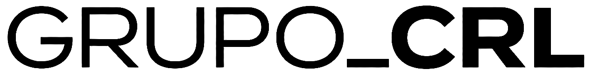
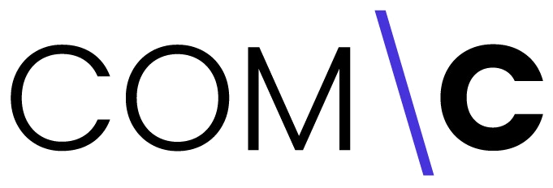
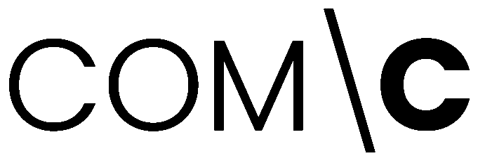
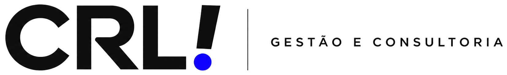
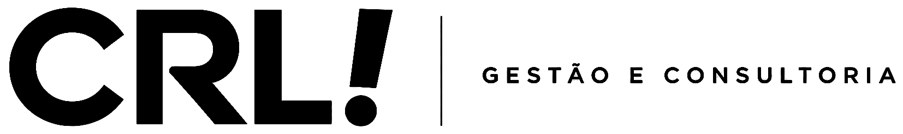
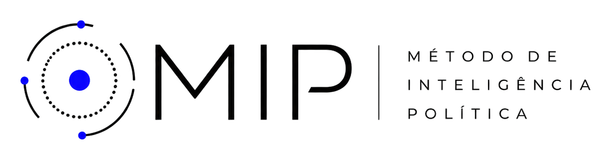
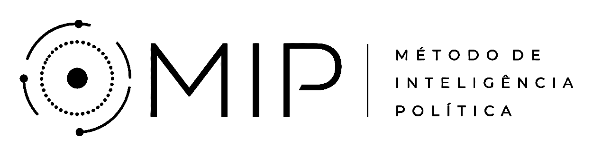
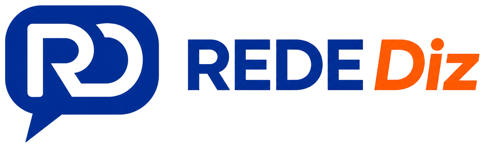
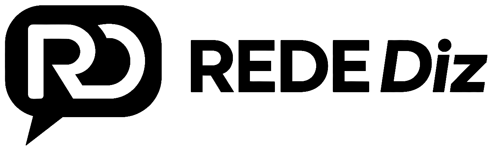

Concepção·Realização·Legado








O Grupo CRL reúne negócios, produtos e iniciativas que atuam em diferentes frentes, mas partem de uma mesma forma de pensar: compreender bem o contexto, construir com estratégia e fazer acontecer.
Transitamos entre gestão, comunicação, inteligência e informação, desenvolvendo projetos que combinam repertório, método, criatividade e execução.
Somos diferentes negócios conectados por uma mesma inquietação: encontrar caminhos melhores para ideias, organizações e projetos que querem avançar.